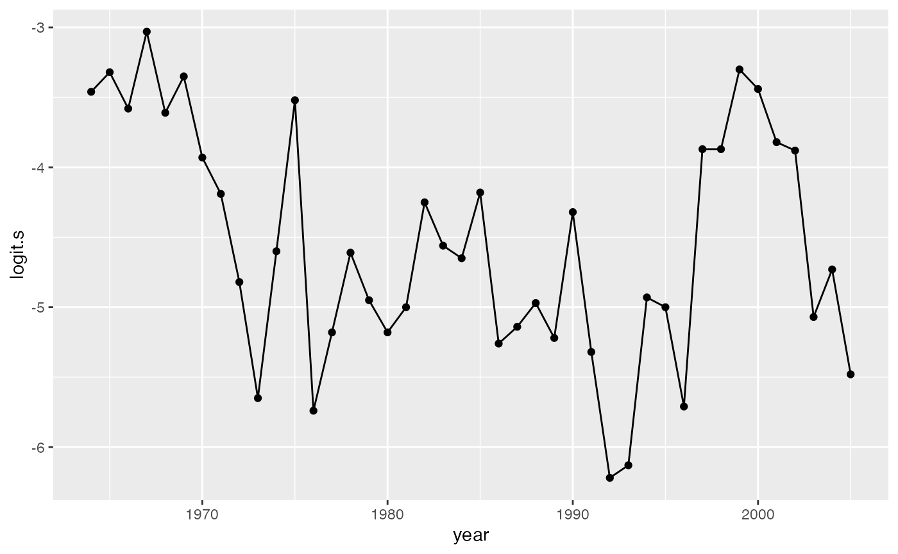

Overview of mvdlm package
Eric J. Ward
2022-09-19
Source:vignettes/a01_overview.Rmd
a01_overview.RmdOverview
For examples, we’re going to use one of the same datasets that are widely documented in the MARSS manual. This data consists of three columns, * year, representing the year of the observation * logit.s, representing logit-transformed survival of Columbia River salmon * CUI.apr, representing coastal upwelling index values in April
## This is loo version 2.4.1## - Online documentation and vignettes at mc-stan.org/loo## - As of v2.0.0 loo defaults to 1 core but we recommend using as many as possible. Use the 'cores' argument or set options(mc.cores = NUM_CORES) for an entire session.## year logit.s CUI.apr
## 1 1964 -3.46 57
## 2 1965 -3.32 5
## 3 1966 -3.58 43
## 4 1967 -3.03 11
## 5 1968 -3.61 47
## 6 1969 -3.35 -21
g1 <- ggplot(SalmonSurvCUI, aes(year, logit.s)) +
geom_point() +
geom_line()
g1
g2 <- ggplot(SalmonSurvCUI, aes(year, CUI.apr)) +
geom_point() +
geom_line()
g2Model 1: time varying intercept and slope
For a first model, we’ll fit the same model used in the MARSS manual, with a time varying intercept and time varying coefficient on CUI. We can specify these time varying effects using the time_varying argument. Note an intercept is not included, like with lm, glm, and similar packages this the intercept is implicitly included. Note that alternatively you could specify this formula as time_varying = logit.s ~ 1 + CUI.apr, where we add the extra 1 to signify the intercept.
Like the MARSS example, we also standardize the covariates,
SalmonSurvCUI$CUI.apr = scale(SalmonSurvCUI$CUI.apr)
fit <- fit_dlm(time_varying = logit.s ~ CUI.apr,
data = SalmonSurvCUI,
chains=1,
iter=1000)##
## SAMPLING FOR MODEL 'dlm' NOW (CHAIN 1).
## Chain 1:
## Chain 1: Gradient evaluation took 0.000259 seconds
## Chain 1: 1000 transitions using 10 leapfrog steps per transition would take 2.59 seconds.
## Chain 1: Adjust your expectations accordingly!
## Chain 1:
## Chain 1:
## Chain 1: Iteration: 1 / 1000 [ 0%] (Warmup)
## Chain 1: Iteration: 100 / 1000 [ 10%] (Warmup)
## Chain 1: Iteration: 200 / 1000 [ 20%] (Warmup)
## Chain 1: Iteration: 300 / 1000 [ 30%] (Warmup)
## Chain 1: Iteration: 400 / 1000 [ 40%] (Warmup)
## Chain 1: Iteration: 500 / 1000 [ 50%] (Warmup)
## Chain 1: Iteration: 501 / 1000 [ 50%] (Sampling)
## Chain 1: Iteration: 600 / 1000 [ 60%] (Sampling)
## Chain 1: Iteration: 700 / 1000 [ 70%] (Sampling)
## Chain 1: Iteration: 800 / 1000 [ 80%] (Sampling)
## Chain 1: Iteration: 900 / 1000 [ 90%] (Sampling)
## Chain 1: Iteration: 1000 / 1000 [100%] (Sampling)
## Chain 1:
## Chain 1: Elapsed Time: 15.4799 seconds (Warm-up)
## Chain 1: 10.0203 seconds (Sampling)
## Chain 1: 25.5002 seconds (Total)
## Chain 1:## Warning: There were 15 divergent transitions after warmup. See
## https://mc-stan.org/misc/warnings.html#divergent-transitions-after-warmup
## to find out why this is a problem and how to eliminate them.## Warning: There were 1 chains where the estimated Bayesian Fraction of Missing Information was low. See
## https://mc-stan.org/misc/warnings.html#bfmi-low## Warning: Examine the pairs() plot to diagnose sampling problems## Warning: Bulk Effective Samples Size (ESS) is too low, indicating posterior means and medians may be unreliable.
## Running the chains for more iterations may help. See
## https://mc-stan.org/misc/warnings.html#bulk-ess## Warning: Tail Effective Samples Size (ESS) is too low, indicating posterior variances and tail quantiles may be unreliable.
## Running the chains for more iterations may help. See
## https://mc-stan.org/misc/warnings.html#tail-essWith only 1000 iterations and 1 chain, we might not expect the model to converge (see additional guidance via Stan developers here: https://mc-stan.org/misc/warnings.html). A couple things to consider:
- Did you get any warnings about divergent transitions after warmup? If so, try increasing the iterations / burn-in period, and number of chains. It’s also worth increasing the value of
adapt_delta. (this will slow the sampling down a little). If you’re still getting these warnings, the model may be mis-specified or data not informative.
fit <- fit_dlm(time_varying = logit.s ~ CUI.apr,
data = SalmonSurvCUI,
chains=1,
iter=1000,
control = list(adapt_delta=0.99))- Did you get a warning about the maximum tree depth? If so, you can increase the maximum tree (
max_treedepth) depth with the following
fit <- fit_dlm(time_varying = logit.s ~ CUI.apr,
data = SalmonSurvCUI,
chains=1,
iter=1000,
control = list(max_treedepth=15))We can extract tidied versions of any of the parameters with
broom.mixed::tidy(fit$fit)## # A tibble: 182 × 3
## term estimate std.error
## <chr> <dbl> <dbl>
## 1 eta[1] -3.38 0.358
## 2 eta[2] -3.10 0.283
## 3 eta[3] -3.50 0.309
## 4 eta[4] -3.18 0.283
## 5 eta[5] -3.65 0.309
## 6 eta[6] -3.45 0.335
## 7 eta[7] -3.99 0.257
## 8 eta[8] -4.23 0.282
## 9 eta[9] -4.68 0.304
## 10 eta[10] -5.20 0.413
## # … with 172 more rows
## # ℹ Use `print(n = ...)` to see more rowsWe also have a helper function for extracting and visualizing trends for time varying parameters.
dlm_trends(fit)## $plot
##
## $b_varying
## # A tibble: 84 × 5
## term estimate std.error par time
## <chr> <dbl> <dbl> <chr> <int>
## 1 b_varying[1,1] -2.75 0.436 (Intercept) 1
## 2 b_varying[2,1] -3.10 0.286 (Intercept) 2
## 3 b_varying[3,1] -3.13 0.367 (Intercept) 3
## 4 b_varying[4,1] -3.14 0.305 (Intercept) 4
## 5 b_varying[5,1] -3.37 0.329 (Intercept) 5
## 6 b_varying[6,1] -3.61 0.284 (Intercept) 6
## 7 b_varying[7,1] -3.90 0.254 (Intercept) 7
## 8 b_varying[8,1] -4.26 0.278 (Intercept) 8
## 9 b_varying[9,1] -4.70 0.292 (Intercept) 9
## 10 b_varying[10,1] -4.93 0.362 (Intercept) 10
## # … with 74 more rows
## # ℹ Use `print(n = ...)` to see more rowsThis function returns a plot and the values used to make the plot (b_varying)
Model 2: time varying intercept and constant slope
As a second example, we could fit a model with a constant effect of CUI, but a time varying slope. The fit_dlm function has two formula parameters, formula for static effects, and time_varying for time varying ones. This model is specified as
fit <- fit_dlm(time_varying = logit.s ~ 1,
formula = logit.s ~ CUI.apr,
data = SalmonSurvCUI,
chains=1,
iter=1000)Model 3: constant intercept and time varying slope
We could do the same with a model that had a time varying effect of CUI, but a time constant slope.
fit <- fit_dlm(time_varying = logit.s ~ CUI.apr,
formula = logit.s ~ 1,
data = SalmonSurvCUI,
chains=1,
iter=1000)